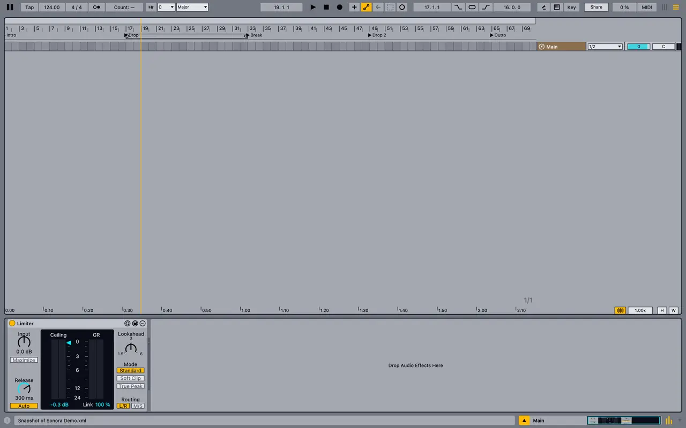
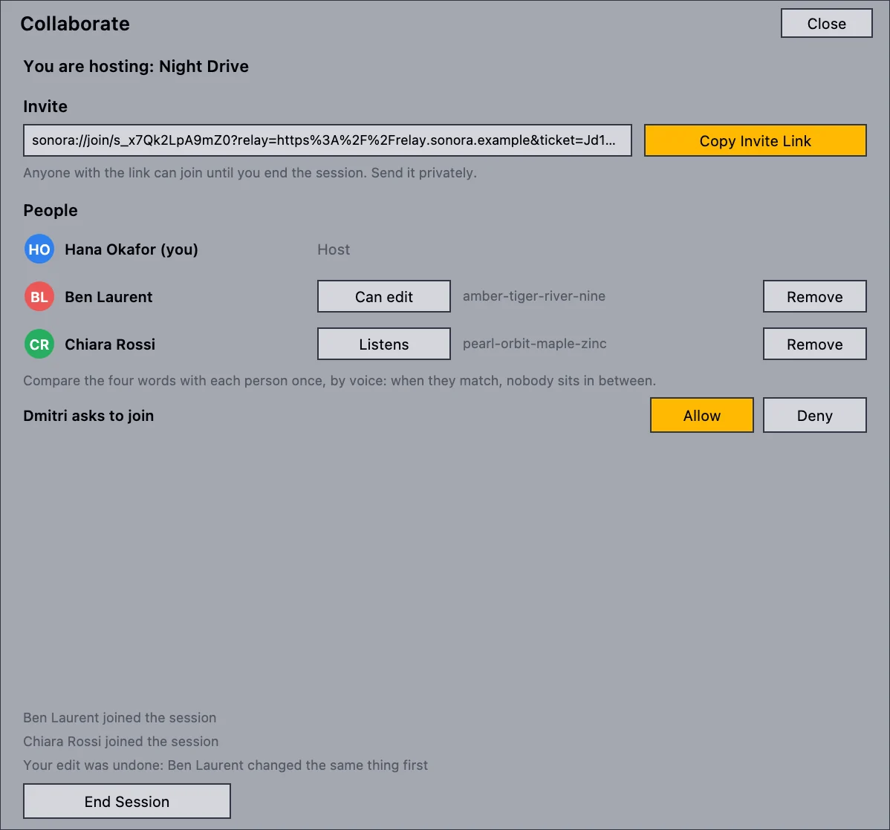
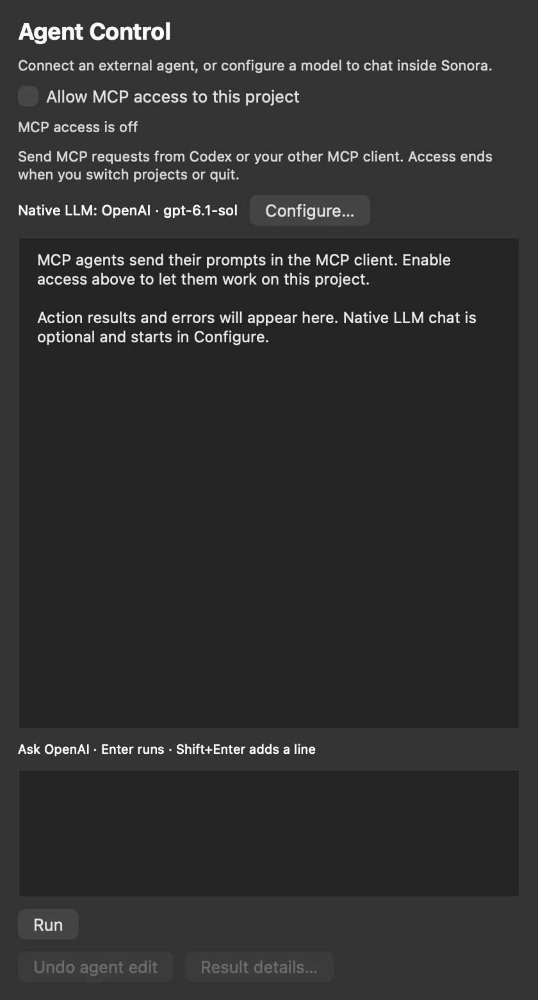
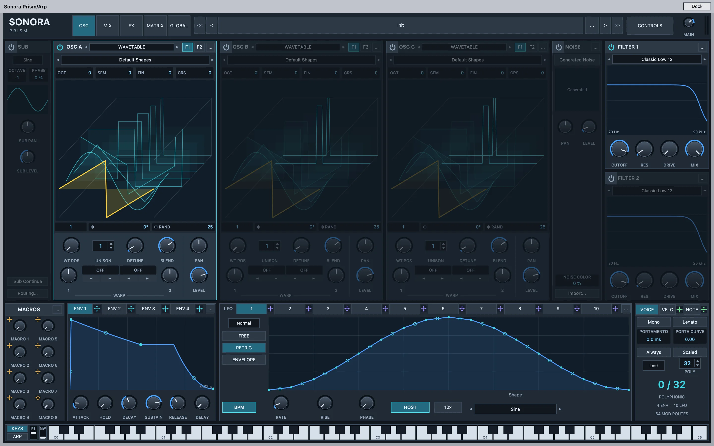
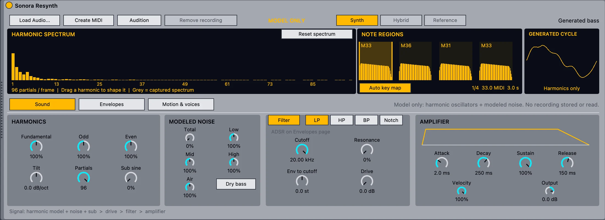

Everyone should be able
to make music.
Sonora is a free, open-source music studio for the Mac, written from scratch. It feels familiar on purpose, so you can start producing today instead of learning a new program.
Free & open source No price, no account, no subscription. Licensed under the AGPL-3.0, so anyone can read, build and improve the code.

A demo track coming together in Sonora. Every frame is drawn by Sonora itself.
Very early, and honest about it.
Sonora is alpha software. Some features are unfinished, and things will change quickly. Please don't trust it with your only copy of a project yet: save often and keep backups.
The idea is to build it together, with people who love music. Every bug report and every idea helps shape what Sonora becomes.
A new studio, built from the ground up.
Started from scratch
Sonora isn't a rip-off of Ableton Live. It's a completely new program with its own audio engine, devices and interface, written from the first line. It contains no Ableton code, presets or samples. It's free and open source so that anyone, anywhere, can produce music.
No new program to learn
The layout follows the Session and Arrangement workflow that so many producers learned on Live, with similar shortcuts and colors. That's a deliberate choice: you get up to speed in minutes, not weeks.
Start your next track here
Sonora can open Ableton Live 12 sets, but that isn't what we recommend it for. It's meant for starting new music, especially electronic music like trance, house and techno. What opening a Live set does today.
Things producers have asked for, for years.
Sonora moves fast and listens to the producer community. These are in Sonora today. In Live 12 they're missing, or need add-ons and workarounds.
Real-time collaboration
Invite friends into your project and edit it together, like co-editing a shared document.
Built-in assistant and MCP
Ask for MIDI parts or device changes in plain words, or connect the AI agent you already use.
Audio to a playable instrument
Sonora Resynth turns a recorded bass line into editable MIDI plus an instrument that plays its sound.
Capture Audio
Missed the take? Sonora keeps the last 60 seconds of your inputs, so you can turn what you just played into a clip.
Linked MIDI clips
Duplicate a clip as linked, edit one copy, and every linked copy follows.
Deactivate tracks
Hide tracks, or deactivate them so their plug-ins unload and use no CPU.
Strip Silence
Cut an audio clip into its sounding parts, and jump between transients with the keyboard.
Your own shortcuts
Rebind any menu command in Settings. Conflicts are handled for you.
Checked against Live 12.4 documentation and public forums in October 2026. See the full comparison, including where Live is ahead.
Make music together, live.
Collaboration is built into Sonora, not bolted on. Share a session, send the invite link, and everyone works on the same project at the same time, the way you'd co-edit a document online.
- See each other: everyone's cursor, selected clip and time selection, in their own color.
- Play together: a shared transport starts and stops for everyone.
- Samples travel with the project: guests receive the audio files they need automatically.
- Stay in control: decide who joins, who can edit and who only listens, and compare a four-word safety code.
- Anywhere: on your local network, or over the internet through a relay server.
This is the newest part of Sonora. Internet sessions need a relay server: the relay is open source and you can run your own, and a public one isn't online yet. Everyone needs the same plug-ins installed. Voice chat is planned.

AI that works with you.
Sonora's architecture is built for agents: the built-in assistant and outside AI agents use the same set of checked, typed actions. Every change they make is reported to you and can be undone.
- Built-in assistant: connect OpenAI, Anthropic, Gemini, DeepSeek, GLM, OpenRouter or a compatible endpoint. Your key stays in the macOS Keychain.
- Agent control (MCP): let Claude, Codex or another MCP client inspect your project, write MIDI, add devices and change parameters.
- Opt-in, per project: nothing is on by default, access ends when you switch projects or quit, and no audio is uploaded.

Instruments that would otherwise cost a lot.
Sonora comes with its own synths, free like the rest of it. More are on the way.
Sonora Prism
A powerful wavetable synth: three oscillators with up to 16 unison voices each, two filters, ten LFOs, a 64-slot modulation matrix and a built-in effects rack. Play it inside Sonora, or install the VST3 plug-in to use it in other VST3 hosts on your Mac.
- Three wavetable oscillators with two warp modes each, plus sub and noise.
- Two filters, four envelopes, ten LFOs and 64 modulation routes.
- Drag to modulate: drop an envelope, LFO or macro onto any knob.
- Up to 32 voices with 16-voice unison, eight macros and a built-in keyboard.

Sonora Resynth
Turn a recorded bass line or melody into editable MIDI, plus an instrument that rebuilds its sound from harmonics and modeled noise. Then reshape it like a synth. It runs entirely on your Mac, with no cloud service.
- One command: right-click an audio clip and choose Resynthesize to New MIDI Track.
- Edit the notes in the piano roll and play the sound from your keyboard.
- Sound design: drag individual harmonics, shape noise, filter, envelopes and an LFO.
- Native in Sonora. Works best on dry parts with one note at a time.

Small updates, often.
Sonora improves quickly, so updating has to be painless. On the Mac, Sonora uses delta updates: it downloads only what changed since your version, and falls back to the full download if a delta can't be used.
- Never mid-take: Sonora won't restart while you're playing, recording or exporting.
- Signed and checked before anything is installed.
- Your choice: nothing installs without your click, and you can turn the checks off.
Windows and Linux builds don't update themselves yet.

Who it's for, and who it isn't for yet.
Sonora is for you if
- You want to make music and can't, or don't want to, spend money on a DAW.
- You produce electronic music, like trance, house or techno, and like the Session and Arrangement way of working.
- You want to make tracks with friends in real time, or try AI in your workflow.
- You enjoy trying new things and don't mind reporting a bug now and then.
- You care about open source, or want to help build a studio for everyone.
Not the right choice yet if
- You need a stable studio for paid work and deadlines today.
- You need professional support when something goes wrong.
- Your music depends on Max for Live, Push or Ableton Link.
- You want to keep working on existing Live projects exactly as they sound now.
- You're on an Intel Mac. Sonora needs Apple silicon.
If you're a professional, or you have the money, go ahead and buy Ableton Live. It's amazing software, and you'll get real support with it. Otherwise, give Sonora a try.
Free to download. Free to keep.
Get the alpha for your Apple silicon Mac, make something, and tell us what broke.